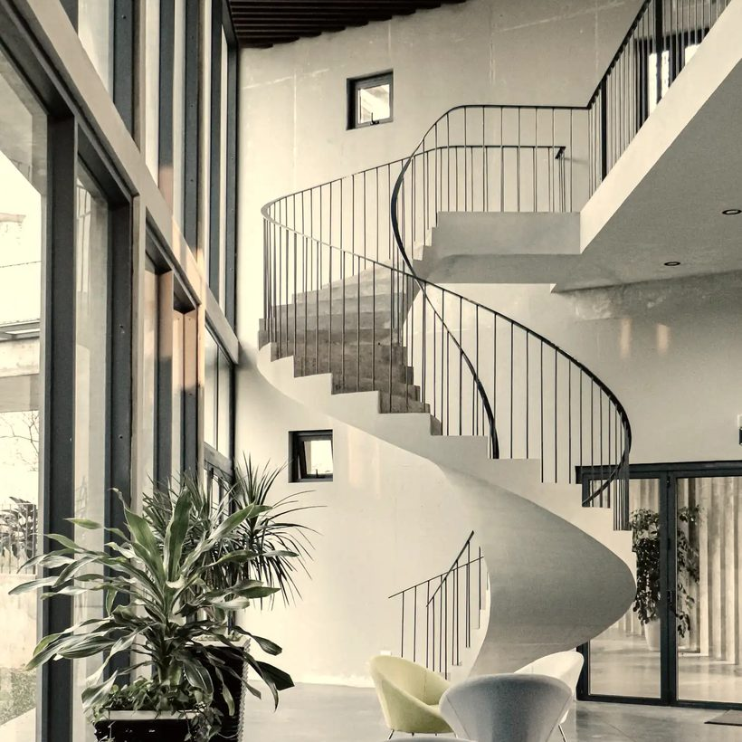

Service et expérience client
Accueil · relation client · réclamations · cohérence à chaque point de contact

Formation & standards de service — Maroc
Hôtels, riads, restaurants et traiteurs. Sur le terrain, pendant le service, avec vos équipes.
Première visite d’observation offerte
Maisons et institutions servies
Palais Royal de Belgique, Parlement européen, Commission européenne, Louis Vuitton, Chanel, Hermès, Tiffany & Co. — institutions et maisons pour lesquelles des prestations de service ont été assurées.
Le point de départ
Pas de standard écrit, un encadrement jamais formé au management, des nouveaux qui apprennent en regardant leur voisin.
Observer vos services, écrire les standards qui manquent, former les équipes à les tenir.
Un système qui fonctionne sans nous — et qui tient encore trois mois plus tard.
L’irrégularité ne vient presque jamais du manque de bonne volonté. Elle vient de l’absence de standard écrit, d’un encadrement intermédiaire promu sans avoir été formé au management, et de nouveaux collaborateurs qui apprennent le métier en regardant faire leur voisin.
Dyani Hospitality n’intervient pas seulement pour former. Nous observons vos services, identifions où l’expérience se rompt, écrivons les standards qui manquent, formons les équipes à les tenir, puis vérifions sur le terrain qu’ils tiennent encore trois mois plus tard.
L’objectif n’est pas de vous rendre dépendant d’un consultant. C’est de laisser derrière nous un système qui fonctionne sans nous.
Interventions
Chaque mission combine ces registres selon ce que révèle le diagnostic. Ils sont rarement isolés.
Accueil · relation client · réclamations · cohérence à chaque point de contact
Chefs de rang · maîtres d’hôtel · gouvernantes · chefs de réception
Gestes métier · salle · bar · accueil · hébergement
Procédures · check-lists · fiches de poste · contrôle de l’application
Méthode
Chaque étape produit un livrable. C’est leur enchaînement qui fait tenir le résultat.
Plusieurs services suivis en conditions réelles, sans intervenir. Ce que l’on voit un vendredi soir ne se lit dans aucun document.
Les points de rupture et leurs causes : problème de compétence ou d’organisation.
Standards, procédures, check-lists et fiches de poste, dans un format que vos équipes utiliseront.
Sur place, en situation, dans la langue de travail des équipes.
L’encadrement accompagné pendant les premiers services, là où les standards se perdent.
Visite mystère, grille d’écart aux standards, indicateurs convenus avec la direction.
Corriger ce qui n’a pas tenu, ajuster les procédures à la réalité de l’exploitation.
Sur le terrain
Avec les équipes qui l’assurent, sur le matériel qu’elles utilisent réellement.
Une équipe n’apprend pas un standard en l’écoutant. Elle l’apprend en l’exécutant, corrigée sur le moment, jusqu’à ce que le geste tienne sans qu’elle ait à y penser. C’est la raison pour laquelle chaque mission commence par plusieurs services observés en conditions réelles, et non par un support de présentation.
Les documents remis — procédures, check-lists, fiches de poste — ne sont pas des livrables de fin de mission. Ce sont les outils avec lesquels les équipes travaillent pendant la formation, puis après notre départ.

Ce qui n’a pas été exécuté devant moi n’a pas été formé.
Ibrahim Dyani
Étude de cas · Knokke-Heist
Au cœur du Carré d’Or, une maison à construire entièrement : sans carte, sans équipe, sans procédures.


Conception des menus et construction de la grille tarifaire.
Sélection des partenaires, de la vaisselle, du linge et du verre.
Paramétrage complet, de la fiche produit à l’encaissement.
Constitution de l’équipe de salle, d’un effectif sans expérience commune jusqu’au premier service.
Cahier des charges, fiches de poste, séquence de service et contrôles.
Une ouverture réussie ne se mesure pas au jour où les portes s’ouvrent, mais à la capacité de la maison à tenir la même exigence une fois le projet transmis.


Recommandation
Morgan Picot
Maître d’Hôtel principal — JML Concept
Traiteur officiel de la Famille Royale de Belgique · Bruxelles
« Je recommande très chaleureusement et sans aucune réserve […] pour toute fonction impliquant exigence, discrétion, rigueur protocolaire et service de très haut niveau. »
« Ibrahim a évolué à mes côtés sur des missions requérant une précision irréprochable, avant d’assurer lui-même des fonctions de Maître d’Hôtel en autonomie. »
Aptitudes relevées dans la lettre : diriger et harmoniser des équipes de service ; anticiper les attentes des hôtes avec une justesse remarquable ; préserver la fluidité et la sérénité d’un événement, même sous forte pression ; maintenir un niveau d’excellence constant, du premier briefing à la fin de service.
Lettre de recommandation complète disponible sur demande.
Formations
Quatre familles. Durées indicatives, ajustées à votre organisation.
Le tarif dépend de ce que vous avez besoin de corriger. Un échange, une observation sur site, puis une proposition chiffrée.
La première visite d’observation est offerte.
Demander le cataloguePour qui
Une salle exceptionnelle ne compense jamais un service approximatif — elle le rend visible.

Six niveaux, six attentes. Le contenu d’une formation ne se règle pas sur un intitulé de poste, mais sur ce que la personne doit tenir pendant le service.
Commis et serveurs
Gestes métier, séquence de service, rythme. Le socle : ce qui doit être juste avant même d’être rapide.
Chefs de rang
Tenue d’un rang, conseil au client, vente additionnelle. Vendre sans vendre : renseigner assez bien pour que le client choisisse mieux.
Maîtres d’hôtel
Direction du service, coordination avec la cuisine, gestion de l’incident. Tenir la salle quand rien ne se passe comme prévu.
Managers de terrain
Briefer, contrôler, corriger, intégrer. C’est souvent là que tout se joue : former l’encadrant améliore tous les services suivants.
Accueil et réception
Premières secondes, posture, gestion des réclamations. Le moment où l’impression se forme, et où elle se rattrape.
Extras et événementiel
Mise à niveau rapide avant une prestation, homogénéité du service. Une équipe réunie pour un soir doit tenir le niveau d’un personnel permanent.

Le fondateur
Ibrahim Dyani — Maître d’Hôtel, formateur et consultant en organisation opérationnelle.
Régler le niveau d’une équipe sur le standard que votre établissement veut atteindre.
Former un serveur améliore un service ; former son encadrant améliore tous les suivants.
La formation n’est pas une reconversion : elle fait partie de mon métier depuis 2020. Chez JML Concept, traiteur officiel du Palais Royal de Belgique, j’ai formé les équipes de service aux exigences du protocole — y compris des extras réunis pour un seul événement, qui devaient tenir le niveau d’un personnel permanent.
Je forme aussi les managers, et c’est souvent là que tout se joue. Un chef de rang promu maître d’hôtel sait servir, mais personne ne lui a appris à briefer, à contrôler sans humilier, ni à faire tenir un standard un samedi soir complet.
Vos équipes sont formées dans leur langue.
Animation en français ou en arabe. Supports remis en français.
Prendre contact
Sélectionnez, complétez si vous le souhaitez, envoyez. Seul votre e-mail est nécessaire.